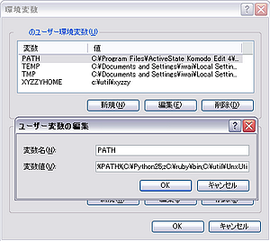
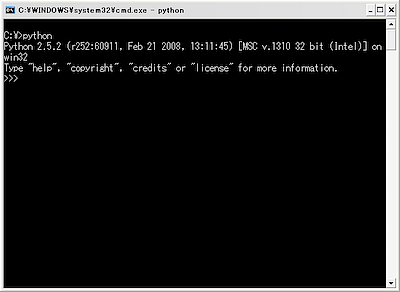
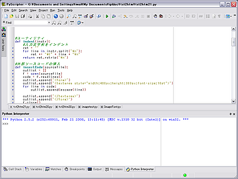

株式会社 アイプランニング
Towa Edogawabashi building 8F
Yamabuki-cho 347
Shinjuku-ku Tokyo
Phone: 03-5225-1147
ドキュメントの自動生成という課題を通して、スクリプト言語であるPythonを学習します。
スクリプト言語とは
スクリプト言語は、簡単なプログラムを簡単に書くための言語です。
スクリプト言語は、コンパイルの必要がなく、
CやC++などと比べて作成・修正が容易になっています。
よく知られているスクリプト言語としては、
PerlやJavaScriptがありますが、
最近ではRubyやPythonなど、比較的新しい言語が注目されています。
（主にWeb系の開発に使われているそうです）
スクリプト言語が適用されている例として、
・文字処理
・定型処理
・Webアプリケーションの開発（Ruby on Rails, Djangoなど）
・アプリケーションのアドオン（Inkscape, Blenderなどのオープンソースプロダクトに多数）
などがあげられます。
今回使う言語
Windowsであれば、環境構築もせずすぐ使えるJScriptもよかったのですが、
とっつきやすそうだったのと、きれいなIDEがあったので、Pythonを選択しました。
Pythonとは

Python（パイソン）は、Guido van Rossumが1990年にMac OS向けに開発した
オープンソースのプログラミング言語です。
Googleが社内開発に採用している言語としても有名です。
特徴としては：
・スクリプト言語
・オブジェクト指向
・マルチプラットフォーム（Windows, Linux, Mac OS, .NET, JavaVM上で動作します）
などがあげられます。
また、JavaのライブラリをPythonコードから使うこともできる、
「Jython」という実装もあります。
Jythonを使うことで、JavaとPythonの混合コードでアプリケーションを作ることも可能です。
InkscapeやBlenderなどのオープンソースアプリケーションの
アドオンを書くための言語としてもメジャーです。
また、最近のWASではJythonをサポートしています。
Pythonのインストール
処理系のインストール
Python公式サイト
2008.04.16現在の安定版はPython2.5.2です。
Windows installerをダウンロードし、インストールしてください。
環境変数の設定
コントロールパネルから、
システムのプロパティを開き、
ユーザ環境変数のPATHに、
インストール先のパスを追加してください。
（インストーラの標準は C:\Python25 になっていると思います。）

（蛇足ながら、システムのプロパティのショートカットはWindowsキー＋Pauseです。）
実行
コマンドプロンプトから
Python
と入力すると、対話型インタプリタが実行されます。

ここで、
print "Hello, World"
と入力して改行すると、
Hello, World
と表示されます。
PyScripterのインストール
使い慣れたエディタとコマンドプロンプトでも十分開発は出来るのですが、
PyScripterというIDEがなかなか便利です。

PyScripterでは以下のような機能をサポートしています：
・色分け
・キーワード補完
・対話型インタプリタの実行
・文法チェッカ
・テスト
・デバッガ
・F9で実行
言語としての特徴
どんなことが出来るかの例です。
・ファイルを読み込み、配列変数aryに内容を行ごとに代入
ary = open("c:\test\input.txt").readlines()
・配列変数aryの内容をソート
ary.sort()
・配列変数aryをファイルに出力
open("c:\test\output.txt", "w").writelines(ary)
・文字列置換
import re #正規表現モジュールのインポート
re.sub("t", "T", "test")
→ 'TesT'
そのほかの例は、Python Japan Users GroupのPythonの紹介記事を参照してください。
Pythonでhtml生成
Wiki記法風txtからhtmlを自動生成するPythonスクリプトを書いてみました。
（「達人プログラマー」も同様の手法で原稿を生成しているようです）
↑Python2.5.2で動作確認しています。
htmlジェネレータです。
動作を試してみたい方は、以下のファイルをダウンロードしてtxt2htm.pyを実行してください。
txt2htmset.zip(7kb)
このスクリプトは、Wiki記法風の見出し解釈と、ヘッダやフッタ挿入を行います。
スクリプトが置かれたフォルダにあるtxtファイルをhtmlファイルに変換するようになっています。
なお、「％ファイル名」と書くと、％以下のファイルを本文中に挿入します。
本ページでは、この外部ファイル挿入機能を使って、htmlジェネレータ自身のソースコードを挿入しています。
当スクリプトのねらい
・html内に埋め込んだソースが、常に最新に保たれる
・リニューアルやhtmlの構成変更に強い（htmlではなく、ヘッダやフッタだけ編集すればいい）
・htmlタグの記述ミスが起こらない
Pythonプログラミングのポイント
Python2.4以降で日本語を使いたい場合は、
プログラムの１〜２行目にエンコーディングを指定してください。
例）Shift_JISを使う場合
# coding=Shift_JIS
おまけ JavaScript版
職場の規定上、Pythonをインストールできない場合も当然あると思われます。
そのような場合、Windows環境に限られますが、JScript+WSHを使う手もあります。
Javascriptで、先ほど作成したPythonスクリプトの簡易版を書いてみました。
ソースの挿入機能はついていません。
ブラウザ上で動かす場合、
ローカルファイルにアクセスはできないためです。
（WSHのFileSystemObjectを使うことでファイルの読み書きが可能です。）
WSHの使用方法については以下のサイトを参考にしてください。
JavaScript vs Python
少し使ってみた時点では、
Pythonの方がバッチ処理用途には向いていると思います。
（ライブラリが充実しており、ローカルのファイル操作がシンプルに書けます。）
JavaScriptは導入が楽です。
FireFoxにFireBugプラグインを導入するだけで、
デバッグ環境・対話型シェルが手に入ります。
どちらの言語も、
JavaやCとそれほど変わらない文法で、定型作業をシンプルに書くことができます。
（プロトタイプベースとクラスベースの言語という違いはありますが）
まとめ
スクリプト言語は、これからますます適用範囲が広がっていくと思われます。
Pythonはサーバサイド(執筆時点では、Google Appsが盛り上がっています)、
JavaScriptはクライアントサイド(Ajaxなど)のスクリプト言語として
より身近な存在になっていきます。
まずは定型処理の自動化など、
身近な問題の解決に使ってみてはいかがでしょうか。
アイプランニング技術情報
技術情報TOPページ
プログラマ募集中・・・
お客さまの立場に立ってモノが作れる判断力、企画力、コンサルティング能力を磨きたくはありませんか？プログラム能力は、プロジェクトを通じて自然と能力があがるようなシステムになっています。初心者プログラマであっても３年程度で、その能力は初心者だったとは思えないくらいのスキルとなっています。
これは、「最初は誰でも初心者だ」という教育方針があるため、また、多くの社員が入社して初めてプログラミングにふれたという経験があるために自分のつまづき体験や、成功体験を含めた教育がなされているからなのです。
このようにアイプランニングでは、社員１人ひとりの個性と人間性を重視し、スキルにあったマンツーマン教育であなたを一人前のエンジニアへと成長させていきます。 それは誠実なスタッフが集まっているからこそ、どんなお客様からも信頼される企業に成長できるから。私たちはそう考えています。
プログラマを目指して会社に入ったものの、思った通りの仕事をさせてもらえなかったと思っている人、教育システムが十分でなかったためにスキルが身に付いていないと思っている人も気軽にご応募ください。パソコンのスキルに自信のない方でも、マンツーマンの研修制度で一人前に成長できるフィールドを整えておりますので安心してご応募くださいね。
知識だけでなく本当の開発力が身につく環境でのシステム開発でみつかる『やりがい』はもちろん、プライベートでも今までになかった充実感が得られますよ。